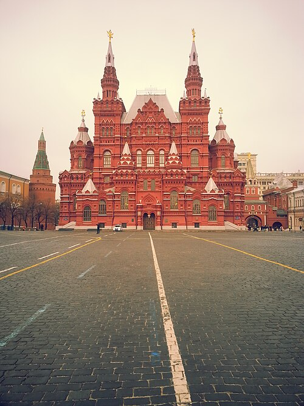

Здесь расположены: Московский Кремль и Красная площадь, Третьяковская Галерея, Храм Христа-Спасителя и многие другие объекты Всемирного Наследия ЮНЕСКО. В Москве вы можете посетить Новый и Старый Арбат, ВВЦ и знаменитые «высотки» сталинской эпохи.
